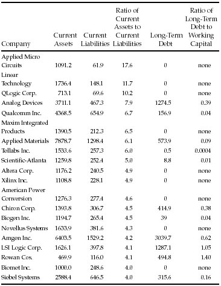
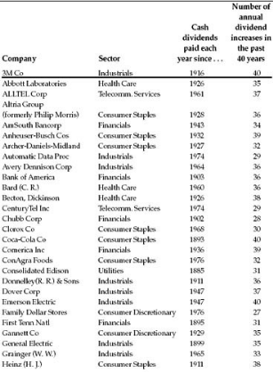
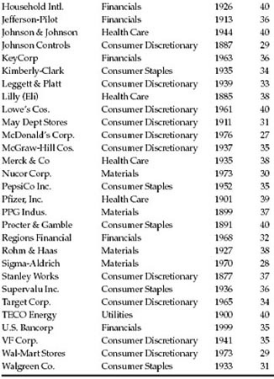

He that resteth upon gains certain, shall hardly grow to great riches; and he that puts all upon adventures, doth oftentimes break and come to poverty: it is good therefore to guard adventures with certainties that may uphold losses.
—Sir Francis Bacon
How should you tackle the nitty-gritty work of stock selection? Graham suggests that the defensive investor can, “most simply,” buy every stock in the DowJones Industrial Average. Today’s defensive investor can do even better—by buying a total stock-market index fund that holds essentially every stock worth having. A low-cost index fund is the best tool ever created for low-maintenance stock investing—and any effort to improve on it takes more work (and incurs more risk and higher costs) than a truly defensive investor can justify.
Researching and selecting your own stocks is not necessary; for most people, it is not even advisable. However, some defensive investors do enjoy the diversion and intellectual challenge of picking individual stocks—and, if you have survived a bear market and still enjoy stock picking, then nothing that Graham or I could say will dissuade you. In that case, instead of making a total stock market index fund your complete portfolio, make it the foundation of your portfolio. Once you have that foundation in place, you can experiment around the edges with your own stock choices. Keep 90% of your stock money in an index fund, leaving 10% with which to try picking your own stocks. Only after you build that solid core should you explore. (To learn why such broad diversification is so important, please see the sidebar on the following page.)
WHY DIVERSIFY?
During the bull market of the 1990s, one of the most common criticisms of diversification was that it lowers your potential for high returns. After all, if you could identify the next Microsoft, wouldn’t it make sense for you to put all your eggs into that one basket?
Well, sure. As the humorist Will Rogers once said, “Don’t gamble. Take all your savings and buy some good stock and hold it till it goes up, then sell it. If it don’t go up, don’t buy it.”
However, as Rogers knew, 20/20 foresight is not a gift granted to most investors. No matter how confident we feel, there’s no way to find out whether a stock will go up until after we buy it. Therefore, the stock you think is “the next Microsoft” may well turn out to be the next MicroStrategy instead. (That former market star went from $3,130 per share in March 2000 to $15.10 at year-end 2002, an apocalyptic loss of 99.5%). 1 Keeping your money spread across many stocks and industries is the only reliable insurance against the risk of being wrong.
But diversification doesn’t just minimize your odds of being wrong. It also maximizes your chances of being right. Over long periods of time, a handful of stocks turn into “superstocks” that go up 10,000% or more. Money Magazine identified the 30 best-performing stocks over the 30 years ending in 2002—and, even with 20/20 hindsight, the list is startlingly unpredictable. Rather than lots of technology or health-care stocks, it includes Southwest Airlines, Worthington Steel, Dollar General discount stores, and snuff-tobacco maker UST Inc. 2 If you think you would have been willing to bet big on any of those stocks back in 1972, you are kidding yourself.
Think of it this way: In the huge market haystack, only a few needles ever go on to generate truly gigantic gains. The more of the haystack you own, the higher the odds go that you will end up finding at least one of those needles. By owning the entire haystack (ideally through an index fund that tracks the total U.S. stock market) you can be sure to find every needle, thus capturing the returns of all the superstocks. Especially if you are a defensive investor, why look for the needles when you can own the whole haystack?
Let’s briefly update Graham’s criteria for stock selection.
Adequate size. Nowadays, “to exclude small companies,” most defensive investors should steer clear of stocks with a total market value of less than $2 billion. In early 2003, that still left you with 437 of the companies in the Standard & Poor’s 500-stock index to choose from.
However, today’s defensive investors—unlike those in Graham’s day—can conveniently own small companies by buying a mutual fund specializing in small stocks. Again, an index fund like Vanguard Small-Cap Index is the first choice, although active funds are available at reasonable cost from such firms as Ariel, T. Rowe Price, Royce, and Third Avenue.
Strong financial condition. According to market strategists Steve Galbraith and Jay Lasus of Morgan Stanley, at the beginning of 2003 about 120 of the companies in the S & P 500 index met Graham’s test of a 2-to-1 current ratio. With current assets at least twice their current liabilities, these firms had a sizeable cushion of working capital that—on average—should sustain them through hard times.
Wall Street has always abounded in bitter ironies, and the bursting of the growth-stock bubble has created a doozy: In 1999 and 2000, high-tech, bio-tech, and telecommunications stocks were supposed to provide “aggressive growth” and ended up giving most of their investors aggressive shrinkage instead. But, by early 2003, the wheel had come full circle, and many of those aggressive growth stocks had become financially conservative—loaded with working capital, rich in cash, and often debt-free. This table provides a sampler:
FIGURE 14-1 Everything New Is Old Again

All figures in millions of dollars from latest available financial statements as of 12/31/02. Working capital is current assets minus current liabilities. Long-term debt includes preferred stock, excludes deferred tax liabilities. Sources: Morgan Stanley; Baseline; EDGAR database at www.sec.gov.
In 1999, most of these companies were among the hottest of the market’s darlings, offering the promise of high potential growth. By early 2003, they offered hard evidence of true value.
The lesson here is not that these stocks were “a sure thing,” or that you should rush out and buy everything (or anything) in this table. 1 Instead, you should realize that a defensive investor can always prosper by looking patiently and calmly through the wreckage of a bear market. Graham’s criterion of financial strength still works: If you build a diversified basket of stocks whose current assets are at least double their current liabilities, and whose long-term debt does not exceed working capital, you should end up with a group of conservatively financed companies with plenty of staying power. The best values today are often found in the stocks that were once hot and have since gone cold. Throughout history, such stocks have often provided the margin of safety that a defensive investor demands.
Earnings stability. According to Morgan Stanley, 86% of all the companies in the S & P 500 index have had positive earnings in every year from 1993 through 2002. So Graham’s insistence on “some earnings for the common stock in each of the past ten years” remains a valid test—tough enough to eliminate chronic losers, but not so restrictive as to limit your choices to an unrealistically small sample.
Dividend record. As of early 2003, according to Standard & Poor’s, 354 companies in the S & P 500 (or 71% of the total) paid a dividend. No fewer than 255 companies have paid a dividend for at least 20 years in a row. And, according to S & P, 57 companies in the index have raised their dividends for at least 25 consecutive years. That’s no guarantee that they will do so forever, but it’s a comforting sign.
Earnings growth. How many companies in the S & P 500 increased their earnings per share by “at least one third,” as Graham requires, over the 10 years ending in 2002? (We’ll average each company’s earnings from 1991 through 1993, and then determine whether the average earnings from 2000 through 2002 were at least 33% higher.) According to Morgan Stanley, 264 companies in the S & P 500 met that test. But here, it seems, Graham set a very low hurdle; 33% cumulative growth over a decade is less than a 3% average annual increase. Cumulative growth in earnings per share of at least 50%—or a 4% average annual rise—is a bit less conservative. No fewer than 245 companies in the S & P 500 index met that criterion as of early 2003, leaving the defensive investor an ample list to choose from. (If you double the cumulative growth hurdle to 100%, or 7% average annual growth, then 198 companies make the cutoff.)
FIGURE 14-2 Steady Eddies


Source: Standard & Poor’s Corp.
Data as of 12/31/2002.
Moderate P/E ratio. Graham recommends limiting yourself to stocks whose current price is no more than 15 times average earnings over the past three years. Incredibly, the prevailing practice on Wall Street today is to value stocks by dividing their current price by something called “next year’s earnings.” That gives what is sometimes called “the forward P/E ratio.” But it’s nonsensical to derive a price/earnings ratio by dividing the known current price by unknown future earnings. Over the long run, money manager David Dreman has shown, 59% of Wall Street’s “consensus” earnings forecasts miss the mark by a mortifyingly wide margin—either underestimating or overestimating the actual reported earnings by at least 15%. 2 Investing your money on the basis of what these myopic soothsayers predict for the coming year is as risky as volunteering to hold up the bulls-eye at an archery tournament for the legally blind. Instead, calculate a stock’s price/earnings ratio yourself, using Graham’s formula of current price divided by average earnings over the past three years. 3
As of early 2003, how many stocks in the Standard & Poor’s 500 index were valued at no more than 15 times their average earnings of 2000 through 2002? According to Morgan Stanley, a generous total of 185 companies passed Graham’s test.
Moderate price-to-book ratio. Graham recommends a “ratio of price to assets” (or price-to-book-value ratio) of no more than 1.5. In recent years, an increasing proportion of the value of companies has come from intangible assets like franchises, brand names, and patents and trademarks. Since these factors (along with goodwill from acquisitions) are excluded from the standard definition of book value, most companies today are priced at higher price-to-book multiples than in Graham’s day. According to Morgan Stanley, 123 of the companies in the S & P 500 (or one in four) are priced below 1.5 times book value. All told, 273 companies (or 55% of the index) have price-to-book ratios of less than 2.5.
What about Graham’s suggestion that you multiply the P/E ratio by the price-to-book ratio and see whether the resulting number is below 22.5? Based on data from Morgan Stanley, at least 142 stocks in the S & P 500 could pass that test as of early 2003, including Dana Corp., Electronic Data Systems, Sun Microsystems, and Washington Mutual. So Graham’s “blended multiplier” still works as an initial screen to identify reasonably-priced stocks.
No matter how defensive an investor you are—in Graham’s sense of wishing to minimize the work you put into picking stocks—there are a couple of steps you cannot afford to skip:
Do your homework. Through the EDGAR database at www.sec. gov, you get instant access to a company’s annual and quarterly reports, along with the proxy statement that discloses the managers’ compensation, ownership, and potential conflicts of interest. Read at least five years’ worth. 4
Check out the neighborhood. Websites like http://quicktake. morningstar.com, http://finance.yahoo.com and www.quicken.com can readily tell you what percentage of a company’s shares are owned by institutions. Anything over 60% suggests that a stock is scarcely undiscovered and probably “overowned.” (When big institutions sell, they tend to move in lockstep, with disastrous results for the stock. Imagine all the Radio City Rockettes toppling off the front edge of the stage at once and you get the idea.) Those websites will also tell you who the largest owners of the stock are. If they are money-management firms that invest in a style similar to your own, that’s a good sign.